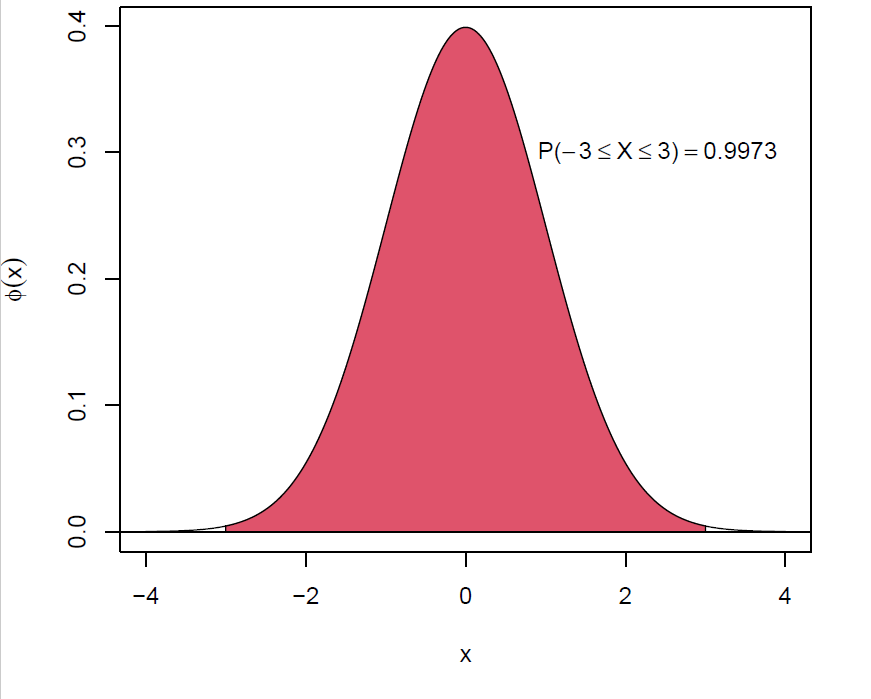
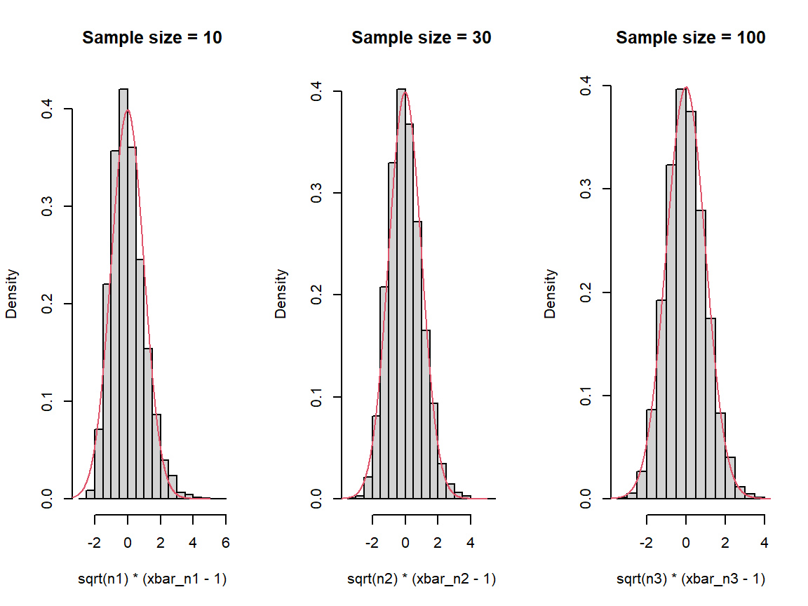
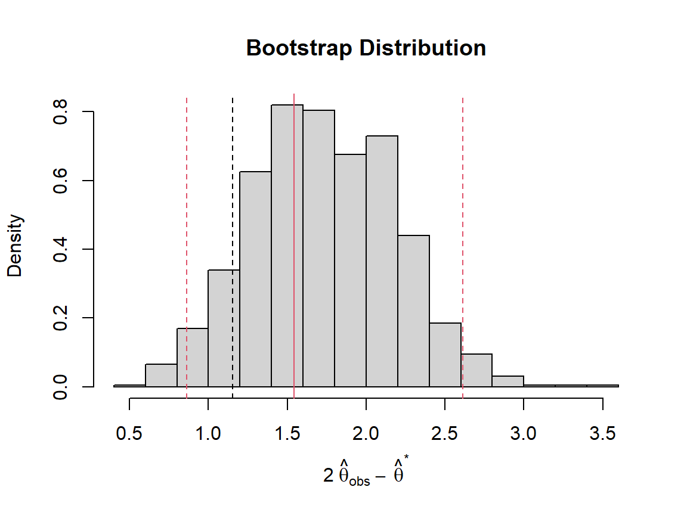
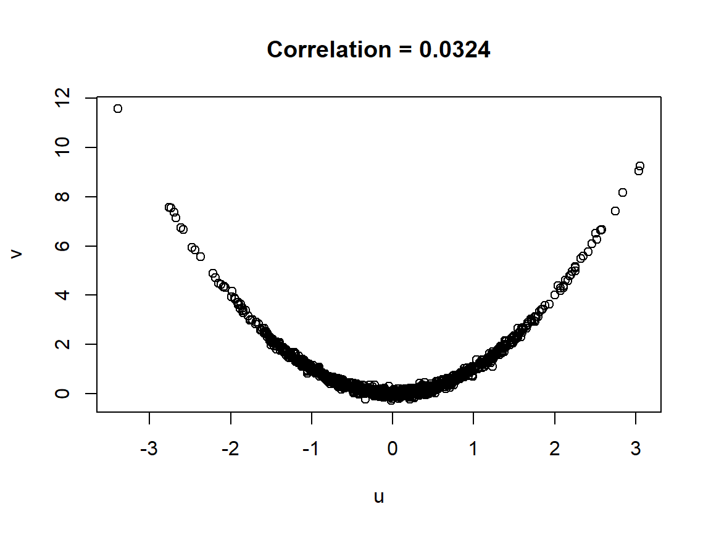
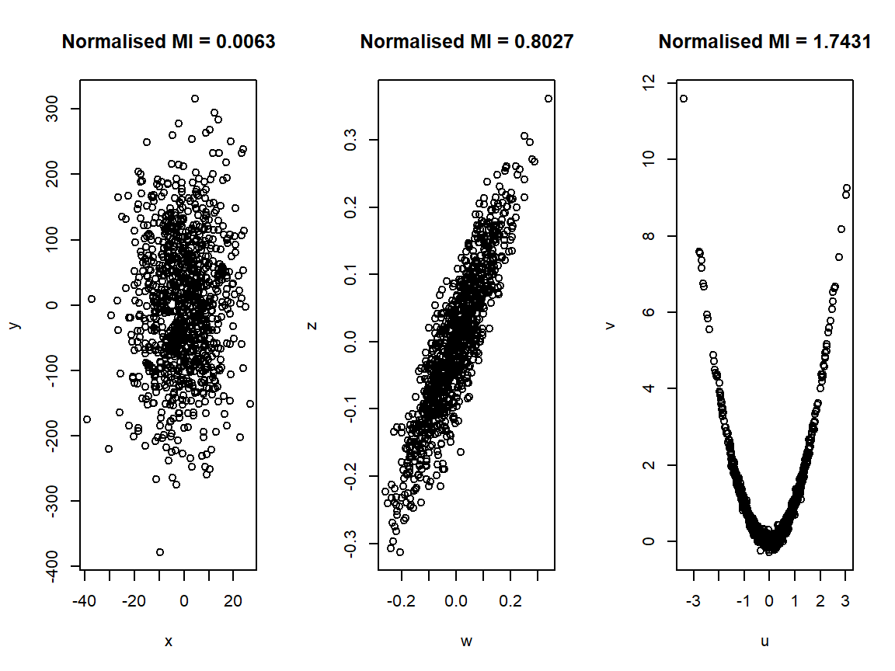

3 Statistical Background
\[ \def\x{\mathbf{x}} \def\Rr{\mathbb{R}} \newcommand{\argmin}{\mathop{\rm argmin}} \newcommand{\argmax}{\mathop{\rm argmax}} \def\F{\mathcal{F}} \def\hbbeta{\hat{\boldsymbol{\beta}}} \def\bbeta{\boldsymbol{\beta}} \def\X{\mathbf{X}} \def\y{\mathbf{y}} \def\hg{\hat g} \]
The purpose of this chapter is to introduce you to some basic and fundamental concepts in statistics and probability, as these will be important in understanding the main topics to come.
We will cover the material only at a high level, so that we can familiarise ourselves with the notation and some of the fundamental ideas. Many of the topics we will be touching on go far deeper than we can in so short a space of time, and it will also be the case that from time to time things will be described in ways which are not quite precise at the deepest level but this is done only to convey the ideas at the level they are required for the content of this module.
3.1 Probability Basics
We all have an innate understanding of what probability means. Indeed very little in life is certain, but we all need to make decisions about how to conduct our lives based on our perceived beliefs about how likely different possible truths are, or futures are to be.
In studying probability, however, we need to break things down to their essence. To do so we think of a single “chance event”, which we refer to as a random experiment. A random experiment is simply an “experiment” (somewhat loosely defined) whose outcome is not predetermined; multiple possible outcomes could take place, and we cannot predict exactly which.
Simple examples of random experiments include rolling a die, flipping a coin, choosing an individual at random from the class, etc.
Importantly it is not necessarily the case that all outcomes are equally: When Steph Curry takes a free throw there are two outcomes, either he scores or he misses, and the probability he scores is somewhere around 0.9
We express probabilities as values between 0 and 1, with a probability 0 essentially being “impossible” and a probability of 1 essentially being “certain”
Some people are more comfortable with speaking in percentages, and a probability of 0.9 may be thought of as 90%
Sample Space
We refer to the set of all possible outcomes of a random experiment as the sample space, and it is often denoted by \(\Omega\) (the Greek “O”, pronounced “omega”).
For example, in our coin flip experiment we have \(\Omega = \{heads, tails\}\) or \(\{H, T\}\) for short. When rolling a (regular) die we have \(\Omega = \{1, 2, ..., 6\}\).
Event
An event may simply be seen as a subset of the sample space, i.e., a collection of potential outcomes to the experiment.
For example, if we are choosing someone randomly from the class we could have events “selecting a female”, “selecting someone who is older than 30”, etc.
When rolling a die we could have as events “rolling an even number”, “rolling a number below three”, etc.
A Simple Definition of Probability
For any event \(E\), we could imagine conducting the random experiment \(n = 1, 2, 3, ...\) times, and counting in how many of these experiments the event occurs. The probability of \(E\), denoted \(P(E)\), may then be seen as
\[ P(E) = \lim_{n \to \infty} \frac{\mbox{Number of times E occurred in first $n$ trials}}{n} \]
It should be intuitively the case that the probability of an event is closely linked to the proportion of times the event occurs if we conduct the experiment lots of times. But obviously we can’t actually perform the experiment infinitely many times, and sometimes we don’t need to conduct the experiment at all and can reasonably assume what the propobabilities of different events are, or come up with analytical expressions for these probabilities.
Example: When flipping a coin we can usually assume that \(P(H) = P(T) = 0.5\)
Example: When choosing an individual at random from the class, the probability of selecting someone older than 30 is simply the proportion of people in the class who are older than 30 (which could be zero, I’m not sure).
If the sample space is countable (either finite or countably infinite, like the natural numbers \(\{1, 2, 3, ...\}\)), and we know the probabilities of each of the individual outcomes, then we can easily determine the probability of an event \(E\) as
\[ P(E) = \sum_{o \in E} P(\{o\}) \]
In general if \(E\) is the union of mutually exclusive events \(E_1\) and \(E_2\), i.e. \(E_1\) and \(E_2\) cannot occur together, then \[ P(E) = P(E_1 \cup E_2) = P(E_1) + P(E_2) \]
- The union notation \(E_1 \cup E_2\) means “\(E_1\) or \(E_2\)”, and the event \(E_1 \cup E_2\) occurs if at least one of \(E_1\) and \(E_2\) occurs
- A more general form for the above is \[ P(E) = P(E_1) + P(E_2) - P(E_1 \cap E_2), \] where \(E_1 \cap E_2\) means “\(E_1\) and \(E_2\)” and the event \(E_1 \cap E_2\) occurs if and only if both \(E_1\) and \(E_2\) occur
An important consequence is that for any event \(E\) we have \[ P(E) = 1-P(\overline E), \] where \(\overline E\) is the complement of \(E\), and is every outcome not in \(E\).
3.1.1 Conditional Probability and Independence
For two events \(E_1\) and \(E_2\) we may talk about \(E_1\) occurring given that \(E_2\) occurs, and we have the conditional probability of \(E_1\) given \(E_2\) defined as
\[ P(E_1|E_2) = \frac{P(E_1 \mbox{ and } E_2)}{P(E_2)} = \frac{P(E_1 \cap E_2)}{P(E_2)} \]
For the above to be defined, we have to assume that \(P(E_2) > 0\), however we would not be (practically) interested in conditional probabilities where the event on which we are conditioning “cannot happen”.
Independence
Events \(E_1\) and \(E_2\) are said to be independent if
\[ P(E_1 \cap E_2) = P(E_1)P(E_2). \] This implies (as long as \(P(E_2)>0\)) that \(P(E_1|E_2) = P(E_1)\), i.e. if we know that \(E_2\) happens it doesn’t influence the probability that \(E_1\) also happens.
3.2 Random Variables
The main reason for studying the basics of probability, within the context of statistical learning, is for its importance for understanding Random Variables (RV’s). A random variable \(X\) is simply a real-valued function on the sample space of a random experiment.
Every time we conduct the random experiment, it has an outcome \(o\), and the random variable assumes its corresponding value \(X(o)\). In fact the importance of random variables so supersedes the underlying random experiment that, for our purposes, we will typically not even mention the experiment, and simply think of a random variable as being a “quantity” whose value is determined randomly.
Some simple examples of random variables (and their underlying random experiment) include
For the experiment of flipping two coins, with sample space \(\{HH, HT , TH, TT\}\), we could define a number of different random variables
\(X = 1\) if first flip is heads, and 0 otherwise
\(X = 1\) if both flips are the same, and 0 otherwise
\(X\) = total number of heads
For the experiment of choosing an individual randomly from the class, we could define
\(X\) = their height (in cm)
\(X\) = their weight (in kg)
\(X\) = 1 if they have brown eyes, and 0 otherwise
etc.
Random variables like the number of heads out of two coin flips are discrete, as they can only take separate distinct values (0, 1 and 2 in this example). Technically a random variable is discrete if it can only take on countably many values (again either a finite number, or something like the integers or whole numbers).
Continuous random variables, on the other hand, can take any value over a range/interval, or a collection (union) of ranges/intervals. Examples include the weights/heights of people, or the time at which the first bus departs from the underpass on a given day.
The first bus is scheduled for 06h20, so it will most likely depart around that time, perhaps in the interval 06h15 to 06h30.
It may be reasonable to assume the most likely departure time is the scheduled time, and that this likelihood decreases as we move away either forwards or backwards in time.
3.2.1 Probability Distributions (Discrete)
Consider a discrete random variable \(X\) which can take values in a set \(S\) (called the support of \(X\)).
A realisation of the random variable is the actual value it assumes as a result of a particular instance of the random experiment. Typically we use lower case “\(x\)” to denote the (variable) value of the realisation of \(X\).
Note that for a given \(x\), “\(X = x\)” is an event, containing all outcomes of the experiment which lead \(X\) to assume the value \(x\). As an event, we must be able to quantify its probability. The probability mass function (pmf) of \(X\) is the function \[ p_X(x) = P(X=x); x \in S \]and satisfies
\(0 \leq p_X(x) \leq 1; x \in S\) (a probability of 1 is “certain”, and we can’t have negative probabilities)
\(\sum_{x \in S} p_X(x) = 1\) (the random variable has to take on some value, and cannot take on multiple different values at the same time).
The cumulative distribution function (cdf) of a random variable \(X\), often denoted \(F_X\) is defined as
\[ F_X(x) = P(X \leq x) = \sum_{t \in S, t \leq x} p_X(t) \]
Example: Counting Heads
We flip three “unbiased” coins, and let \(X\) be the total number of heads we observe. Write out the probability mass function of \(X\).
The simplest (at least conceptually) approach is to enumerate the entire set of possible outcomes, giving a sample space: \(\{HHH, HHT, HTH, THH, HTT, THT, TTH, TTT\}\)
Since each of these eight is equally likely (we have the same probability of seeing a heads/tails in each of the three flips) we can simply count how many of the eight outcomes aligns with the events \(X = 0, X = 1, X = 2\), and \(X = 3\)
But what if \(n\), the number of coins flipped, had been much larger? Actually enumerating all possibilities would have been tedious (or practically impossible if \(n\) is very large).
There is a much more efficient way, which uses combinatorics.
Consider the example above, and the event \(X = 1\), which is equivalent to \(\{HTT, THT, TTH\}\)
The only thing differentiating them is where we place the single \(H\)
The number of outcomes associated with \(X=1\) is therefore just how many ways we could choose where to place the one \(H\), out of a potential three places
More generally the number of outcomes in the event \(X=x\), when \(X\) is the number of heads in \(n\) flips, is simply the number of ways we can choose \(x\) locations for these heads, out of the total potential \(n\)
Mathematically we denote this by \({n \choose x}\) and it is equal to \(\frac{n!}{x!(n-x)!}\), where the “\(n!\)” means “\(n\)factorial” and is equal to \(n\times (n-1)\times (n-2)\times ... \times 2 \times 1\)
We will come back to this idea when we introduce the Binomial distribution.
Don’t stress, you will not need to derive any formulations which rely on combinatorics yourselves.
3.2.1.1 Expected Value
The mean (or expected value) of a (discrete) random variable is defined as \[ E[X] = \sum_{x \in S} x \ p_X(x). \]Intuitively the expected value can be thought of as the average value we’d see from infinitely many realisations of \(X\).
We often denote the mean by \(\mu\), or \(\mu_X\) if we want to be explicit about which RV’s mean is being referred to.
The expected value is what’s called a linear operator, meaning if \(a\) and \(b\) are real numbers (or more generally scalars) then \[ E[a + bX] = a + bE[X] \]
Also, if we have two random variables, say \(X\) and \(Y\), then \[ E[X + Y] = E[X] + E[Y]. \]
3.2.1.2 Variance and Standard Deviation
Sometimes it is useful to transform a random variable \(X\) into a new one, say by applying a function \(g\). We then have \[ E[g(X)] = \sum_{x \in S} g(x) p_X(x). \]
An important example gives rise to the variance, defined as \[ Var(X) = E[(X-\mu_X)^2] = \sum_{x \in S} (x-\mu_X)^2 p_X(x). \]
The variance captures how spread out realisations of \(X\) tend to be around their mean, and is often denoted by \(\sigma^2\) (or sometimes \(\sigma^2_X\))
The square root of the variance is referred to as the standard deviation, \(\sigma\) (or \(\sigma_X\)).
3.2.1.3 The Binomial Distribution
When counting the number of “successes” from \(n\) independent trials, when each trial is a success with probability \(p\):
We write \(X \sim Binom(n, p)\), and \[ p_X(x) = {n \choose x} p^x(1-p)^{n-x}; \ x = 0, 1, 2, ..., n \]
Note that when \(p = 0.5\) we have \(p^x(1 − p)^{n−x} = 0.5^n\), as in the unbiased coin example
For \(n = 1\) we have the Bernoulli distribution; \(X \sim Bern(p)\)
We have \(E[X] = np\) and \(Var(X) = np(1 − p)\).
The binomial distribution is useful in modelling for classification (which we will see a lot of later on in the module)
The Binomial Distribution in R
The pmfs of random variables in R use the prefix “d”, so that if we want to evaluate \(P(X = x)\), when \(X \sim Binom(n, p)\), we use dbinom(x, n, p). Similarly the cdf uses the prefix “p”, i.e. pbinom(x, n, p).
Example: Daffodil bulbs
Twenty daffodil bulbs are planted in a tub. The probability that a given bulb germinates is 0.32. Calculate
- the probability that exactly 7 bulbs germinate
## [1] 0.1770433- the probability that at most 5 bulbs germinate
3.2.1.4 The Poisson Distribution
The Poisson distribution is also often used to represent “counts”, however in this context we are not conducting a fixed number of trials but rather counting the number of occurrences of interest; like the number of cars passing a point in a road over a chosen time interval, or the number of molecules of a gas in a chosen region.
We write \(X\sim Pois(\lambda)\), where \(\lambda\) is the only parameter of the distrbiution, and \[ p_X(x) = e^{-\lambda}\frac{\lambda^x}{x!}; x = 0, 1, 2, ... \]
Both \(E[X]\) and \(Var(X)\) are equal to \(\lambda\)
In the above examples \(\lambda\) would be equal to the average rate cars pass that point times the length of time it’s being observed, and the average density of the molecules times the volume of the region being studied.
Sometimes the observations we make are not consistent with \(E[X] = Var(X)\), meaning that using a Poisson distribution to “model our problem” is inappropriate
- A popular alternative “counting distribution” is the negative binomial, however that is beyond the scope of this module
The Poisson Distribution in R
Example: Coffee Customers
Customers arrive to a coffee shop at a constant rate of fifteen per hour between 08h30 and 11h00 so that the number of customers in any time interval may be treated as a Poisson random variable. Calculate
- the probability that exactly five customers arrive between 08h30 and 09h00: The \(\lambda\) parameter is 15 × 0.5 = 7.5, and again we use the prefix “d” for the pmf, i.e. the function
dpois(x, lambda)
## [1] 0.1093746- the probability that at least forty customers arrive between 08h30 and 11h00: Note that \(P(X \geq x) = 1-P(X < x)\) (recall the rules for probabability)
3.2.2 Probability Distributions (Continuous)
Recall that a continuous random variable \(X\) is one which can take any value in an interval, or union of intervals.
Although \(X\) can take any value in its support, when it comes to assigning a probability \(P(X = x)\), for some specific value of \(x\), we have to conclude that it is zero, since the “=” means to infinite precision
We therefore describe how we expect realisations of \(X\) to arise through what is called a probability density function (pdf), \(f_X\), which satisfies
\[ P(X \leq t) = \int_{-\infty}^t f_X(x)dx \]
The pdf, similar to the pmf, satisfies
\(f_X(x) \geq 0\) (otherwise we could have negative probabilities)
\(\int_{-\infty}^\infty f_X(x)dx = 1\) (the random variable must take on some value)
Generally speaking we take sums involving the pmf of a discrete random variable, and integrals involving the pdf of a continuous one.
For example, if \(X\) is a continuous random variable we have
\[ \mu_X = E[X] = \int_{-\infty}^\infty x \ f_X(x)dx \]
\[ \sigma^2_X = Var(X) = \int_{-\infty}^\infty (x-\mu_X)^2 \ f_X(x)dx \]
but the intuitive interpretations of these moments are the same as before.
3.2.2.1 The Normal Distribution
By far the most important continuous distribution is the Normal (or Gaussian) distribution. It is the well-known “bell-shaped” distribution, and is parameterised by its mean \(\mu\) and variance \(\sigma^2\).
We write \(X\sim N(\mu, \sigma^2)\) and \[ f_X(x) = \frac{1}{\sqrt{2\pi}\sigma}\exp\left(-\frac{1}{2\sigma^2}(x-\mu)^2\right); \ -\infty < x < \infty \]
The cdf does not have an explicit form
The density is symmetric, with its maximum at \(\mu\), and although it is strictly positive for all \(x\) it decreases very quickly to zero as we move away from \(\mu\) in either direction
- It has “short tails”
If we add normal random variables together, we get another normal random variable
- Remarkably even if the variables being added aren’t themselves normal, the sum typically looks “more normally distributed” than the individual variables themselves (we’ll revisit this a bit later)
The Standard Normal Distribution
If \(X \sim N(\mu, \sigma^2)\) then \(Z = \frac{X-\mu}{\sigma}\) has what’s called a standard normal distribution
- Sometimes informally called a “\(Z\)” distribution
- Arises in “\(Z\) tests”, but we will not go into hypothesis testing in any great depth in this module
The density of a standard normal random variable is often denoted \(\phi\), and its cdf \(\Phi\) (the Greek “f” and “F”)
The above figure shows the pdf of the standard normal distribution, while the following figures show the probabilities that \(Z\) lies within the intervals \((-1, 1)\), \((-2, 2)\) and \((-3, 3)\)

Note that the cdf \(\Phi\) does not have a “nice” form, but numerical integration techniques have been used to obtain extremely close approximations. Moreover, these approximations only need to be known for the standard normal, since for \(X \sim N(\mu, \sigma^2)\) we have
\[\begin{align} P(X \leq x) &= P((X-\mu)/\sigma \leq (x-\mu)/\sigma)\\ &= P(Z \leq (x-\mu)/\sigma)\\ &= \Phi((x-\mu)/\sigma). \end{align}\]
This also means that in general when \(X\) is normally distributed we have
\[\begin{align} P(\mu - \sigma \leq X \leq \mu + \sigma) &= 0.6827\\ P(\mu - 2\sigma \leq X \leq \mu + 2\sigma) &= 0.9545\\ P(\mu - 3\sigma \leq X \leq \mu + 3\sigma) &= 0.9973. \end{align}\]
The Normal Distribution in R
Example: Midday Temperatures
The temperature at midday in Lancaster has mean \(14^\circ\)C and standard deviation \(10^\circ\) C. Assuming that daily temperatures follow a normal distribution, what is the probability that the temperature on a randomly chosen day is
- lower than \(0^\circ\)C? This can be obtained directly from the cdf,
## [1] 0.08075666- higher than \(20^\circ\)C? For this we are looking for the complement of \(X \leq 20\)
## [1] 0.2742531Note that when dealing with discrete random variables which take on only integer values we have for integer \(x\) that \(P(X \leq x) = 1-P(X>x) = 1 - P(X \geq x+1)\) since the event \(X > x\) includes only values for \(X\) which are at least \(x+1\)
On the other hand for continuous random variables the event \(X > x\) includes all values in the interval \((x, \infty)\). Also, since \(P(X=x) = 0\) and hence \(P(X \geq x) = P(X > x)\), we therefore have \(P(X\leq x) = 1- P(X>x) = 1-P(X\geq x)\).
3.3 Samples and Statistical Modelling
So where does this study of random variables get us?
In statistics we refer to “our sample of data” or “sample of observations”, and generally this is drawn from some larger population
This could be a physical population of objects (often people or animals), but could also only exist in principle:
- Example: Suppose we repeated a chemistry experiment multiple times to understand properties of the reagents. The outcomes of the experiments I didn’t conduct, but could have if I had continued or if I had conducted my experiments at different times, don’t actually exist, but they represent other potential members of the population of outcomes I could have seen and included in my sample.
By treating the elements of our sample as realisations of random variables, we can use the theory of probability in order to make appropriate conclusions, which account for the inherent randomness in the sampling process.
3.3.1 Models and Assumptions
We often talk about modelling assumptions, which are assumptions about the population from which our sample came, and also about the “sampling process” (i.e. the way in which elements were taken from the population and added to our sample)
Examples include:
A form for the population distribution, e.g. Poisson, Normal, etc.
Independence, i.e., that knowing the value of one (or some) of the values in the sample should not give you any additional information about the other values
Later on we will talk about assumptions on the relationships between multiple variables (not the same as relationships/dependence between different elements in the sample)
But what exactly is a “model”? Just as in the case of a model airplane, or car, a model is a simplified representation of something.
In the context of statistics we may not be able to “solve problems” directly for the true population/process/system we are studying, but if a model of this phenomenon is a reasonable enough reflection of reality and we are able to solve the problem for the model version then it is useful without necessarily being precise or optimal
This idea is captured well by the famous quote:
“All models are wrong, but some are useful” ~ George Box
With reference to our modelling assumptions, if these assumptions are all reasonable AND they are sufficient to allow us to solve our problem then our model may be useful
If the assumptions are not sufficient, we cannot solve the problem anyway
If our assumptions are not reasonable, then even if we can get a “solution”, it is questionable whether we can trust it
Going forward we will typically refer to our sample of observations, \(x_1, x_2, …, x_n\), as assumed to have been drawn independently from a common probability (population) distribution, the latter condition essentially meaning identically distributed.
What this assumption means is that our sample may be seen as a realisation of a random sample, \(X_1, X_2, …, X_n\), of independent and identically distributed (i.i.d.) random variables.
It is by understanding the statistical properties of such random samples that we can appropriately use our observed sample to make decisions and infer properties of the overall population.
3.4 Statistical Estimation
Let’s begin our study of statistical estimation with an example scenario:
Coffee Customers (again):
Consider again the coffee shop example we described in relation to the Poisson distribution. Imagine that we now start to see that actually the probabilities we calculated did not seem to match very well with our observations, and that actually there were often considerably more customers than we anticipated and staff are barely coping with the demand.
If we took note of the numbers of customers arriving during the busy morning session, over multiple days, we would have a sample of realisations from the population of potential numbers we might see in the near future
- Although the demand for coffee at our shop may change again going forward, meaning that the observations we make now may not be from the same distribution as those in a few years, it might be reasonable to assume that over the period of a year the demand will not change very dramatically.
Using our sample we could obtain an estimate of the actual arrival rate, and then use this to answer questions about what we might expect on future days, like how busy the shop is likely to be at its busiest, or the number of days on which the shop makes a loss.
It is important to note, however, that even if our assumptions are reasonable that does not necessarily make our estimate suddenly equal to the true value. Had we chosen a different set of days on which to record the arrivals, we would have arrived at a different value for our estimate. Both of these would be valid and useful, despite being different.
This is a fundamental consideration in statistical estimation; that the statistics we compute from our sample (like the average arrival rate from our coffee shop over a sample of days) are themselves realisations of random variables.
3.4.1 Estimates and Estimators
This notion, that our entire sample, and therefore any statistics taken from it, could have been different, leads us to question to what extent we can “trust” the conclusions/inferences we make from them.
It is sensible to use our observed arrival rate as a proxy for the actual arrival rate, but we are still uncertain about what the true value is, and how far we expect this estimate might be from the actual rate may influence any decisions we make as a result.
As statisticians we may therefore like to ask questions like “if I had observed infinitely many samples, what proportion of them would have led to an estimate which is within a certain (chosen) distance from the true value being estimated?”
To answer this question we are ultimately interested in the probability distribution of an estimator.
Any way of combining the elements of a random sample to produce an estimate for something about the underlying population, is itself a random variable, and called an estimator. For example,
- The sample mean and variance
\[\begin{align} \bar X &= \frac{1}{n}\sum_{i=1}^n X_i,\\ S_X^2 &= \frac{1}{n-1}\sum_{i=1}^n \left(X_i - \bar X\right)^2 \end{align}\]
are estimators for the population mean and variance, \(\mu_X\) and \(\sigma^2_X\)
Both \(\bar X\) and \(S_X^2\) are indeed random variables, and so have probability distributions in their own right, called sampling distributions.
Our particular sample \(x_1, ..., x_n\) (as opposed to the random sample \(X_1, ..., X_n\) of which our sample is a realisation) gives rise to our corresponding estimates or sample statistics
\[\begin{align} \bar x &= \frac{1}{n} \sum_{i=1}^n x_i\\ s_X^2 &= \frac{1}{n-1}\sum_{i=1}^n \left(x_i - \bar x\right)^2 \end{align}\]
and these can be seen simply as realisations of the random variables \(\bar X\) and \(S_X^2\)
- If you’re confused about the denominator \(n-1\) for \(S_X^2\) and \(s_X^2\) it is primarily in place so that \(S_X^2\) is an unbiased estimator for \(\sigma_X^2\). We will discuss the topic of bias shortly.
To summarise: \(\bar X\) and \(S_X^2\) are estimATORS; rules for combining the elements of a (random) sample in order to obtain an estimate for a characteristic of the underlying population distribution.
- The underlying population meaning the population which gave rise to each element in our sample
Applying the rule/procedure associated with an estimator to an observed sample gives us our estimATE, and the thing we are trying to estimate is called the estimAND.
\(\bar X\) is an estimator for the population mean \(\mu_X\) (our estimand) and \(\bar x\) is our estimate for it
\(S_X^2\) is an estimator for the population variance \(\sigma_X^2\) and \(s_X^2\) is our estimate for it
3.4.1.1 Properties of Estimators
The above examples were estimators specifically for the mean and variance of the underlying population. More generally, we use the notation \(\theta\) to denote an arbitrary quantity related to the underlying population.
It is common to use the “hat” notation, \(\hat \theta\), “theta hat”, to denote an estimator for \(\theta\). If it is not ambiguous, we may also use \(\hat \theta\) to be a particular estimate from an observed sample, and when it is needed we can differentiate the two by using \(\hat \theta_{obs}\) to be the observed estimate.
- For example \(\bar X = \hat \mu\) and \(\bar x = \hat \mu_{obs}\), etc.
If we can understand the probability distribution of an estimator, \(\hat \theta\), we can quantify our uncertainty about the actual \(\theta\) when using \(\hat \theta_{obs}\) as a “proxy” for it.
Standard Error
A direct way of quantifying this uncertainty is through the variance or standard deviation of the estimator
If an estimator has high variance, then realisations of it tend to be quite spread out
Believing that any single realisation is close to the true value is therefore prone to risk
- It is very important to note, however, that having high variance is not a limitation of an estimator, per se, but knowing that it has high variance allows us to appropriately incorporate this information in any decision making.
The standard error of an estimate is simply the standard deviation of the estimator of which it is a realisation
Bias
The variance of a random variable quantifies how spread out it tends to be about its mean. In the context of estimation, therefore, knowing only the variance of an estimator is not always useful on its own
- In an absurd example we could design an estimator which always takes the value zero, regardless of the sample values. Such an estimator has zero variance, but it is clearly not of much use since it doesn’t actually use any information from the sample
The bias of an estimator is a measure of how far off the mean of the estimator is from the estimand. Specifically
\[ Bias(\hat \theta) = E[\hat \theta] - \theta. \]
Bias is therefore signed, i.e.
Positive bias means the estimator tends to overestimate the target
Negative bias means the estimator tends to underestimate the target
3.4.1.2 Confidence Intervals
Although the variance and expected value of an estimator can give us a good sense of how accurate our estimate is likely to be, while also giving a sense of uncertainty, confidence intervals communicate this information extremely effectively.
At a high level a confidence interval may be seen as a set of plausible values for the true parameter. Whereas a point estimate, say \(\hat \theta_{obs}\) may be thought of as in a sense the “most plausible”, we never really believe that \(\hat \theta_{obs} = \theta\), only that it is likely that \(\hat \theta_{obs} \approx \theta\). But how rough or precise this approximation is may have far reaching consequences, and though the standard error of \(\hat \theta_{obs}\) gives a sense of this “roughness” a confidence interval is far more explicit.
Imagine we could access values \(l\) and \(u\) having the property that
\[ P(l < \theta - \hat \theta < u) = 0.95. \]
Since \(\hat \theta_{obs}\) is just a realisation of the random variable \(\hat \theta\), this would mean that of all potential samples I could see, \(95\%\) of them would lead to an estimate \(\hat \theta_{obs}\) which satisfies \(\hat \theta_{obs} + l < \theta < \hat \theta_{obs} + u\).
If I know that of all potential samples I could see, \(95\%\) of them would give me an interval of the form \((\hat \theta_{obs} + l, \hat \theta_{obs} + u)\) which contains the true parameter \(\theta\), then surely I can be pretty “confident” that the sample I actually have is one of these “nice” ones. After all, only \(5\%\) of all possible samples would “let me down” in this regard.
- Think of the analogy of pulling a ball from a bag. If I know that \(95\%\) of the balls are blue, and I take one ball out of the bag with my eyes closed, even before I look at the ball I can be very confident that I have a blue ball.
Why are intervals like this useful, you may ask? To answer, let’s consider the basic reproduction number of a disease (you probably all remember the famous \(R_0\) from the COVID pandemic). Suppose a group of statisticians estimates that \(R_0\) is \(0.93\). If you remember the pandemic well, you’ll remember that the critical value is \(R_0 = 1\), with a smaller value meaning the infection is “dying out” and a greater value meaning it will continue to spread. So, great, right? We’re told that “someone” thinks \(R_0\) is \(0.93 < 1\) and everyone is happy and society can begin to “re-start”. But wait, \(R_0\) is a tricky thing to estimate and there is a lot of uncertainty. Actually the statisticians communicate in addition that their \(95\%\) confidence interval for \(R_0\) is \((0.82, 1.09)\). Because of the potentially disastrous outcomes if actually \(R_0\) is above one, it may be prudent to behave as though \(R_0\) is actually \(1.09\) since the statisticians think this is also a plausible value.
Statistical “Errors”
Let’s quickly take an aside.
It may be that some of you are uncomfortable about the fact that there is still a \(5\%\) of being “wrong”. Unfortunately we can never completely eliminate uncertainty without losing practicality. We could always say “we are \(100\%\) confident that \(R_0\) is greater than zero”. But a statement like this is completely useless since \(R_0\) is greater than zero by its definition, not because of some fancy statistical procedure which produced a “\(100\%\) confidence interval”.
Because we are dealing in the realms of randomness, it is always possible to get “unlucky” and be led to a conclusion which is misleading. This doesn’t mean that a mistake was made. The best statisticians in the world, asked to produce a whole lot of \(95\%\) confidence intervals, will “get unlucky” \(5\%\) of the time.
Why \(95\%\)?
The choice of going with \(95\%\) confidence intervals in the above description was completely arbitrary. In fact we can choose to have any level of confidence between \(0\) and \(100\%\). However, there is a “cost”. If we want to have a high degree of confidence then we cannot be very precise. What this means is that we could increase our level of confidence, say to \(99\%\), but this would mean that the confidence interval would have to be wider than the \(95\%\) confidence interval. There is no “correct answer” for the level of confidence and it will often depend on the context. In the “high risk” pandemic context we may want to have a high degree of confidence, even if it means we are led to be overly risk averse.
3.4.1.3 The Central Limit Theorem and the Bootstrap
Now to the hard part. Constructing confidence intervals is contingent on being able to access the values \(l\) and \(u\) which allowed us to actually obtain our interval \((\hat\theta_{obs} + l, \hat \theta_{obs} + u)\).
It should be clear that knowing the sampling distribution of an estimator can be crucial for any decision making on the basis of an observed estimate, and would allow us to at obtain the values \(l\) and \(u\). However, it is rare that an exact sampling distribution is known and frequently we must rely on (at best) approximations.
One of the most fundamental results in statistics is called the central limit theorem (CLT), and in its simplest form states that the sampling distribution of the sample mean, \(\bar X\), is approximately normal, and formally we have that
\[ \sqrt{n}\frac{\bar X - \mu_X}{\sigma_X} \] has a distribution well approximated by the standard normal distribution provided only
The sample is “reasonably large”. The actual theory is asymptotitic, meaning that the distribution tends to a normal distribution as the sample size tends towards infinity. A working rule of thumb people use is \(n \geq 30\) is sufficient provided the underlying distribution is at least very roughly symmetric
The population variance, \(\sigma_X^2\), is finite. This is absolutely vital for the central limit theorem to apply, but for the vast majority of applications is not something we really need to concern ourselves with. More important in most cases is whether an appropriate estimate for \(\sigma_X^2\) is available
When the population itself is normally distributed, we always have that \(\sqrt{n}(\bar X - \mu_X)/S_X\) has what is known as a “t-distribution” with \(n-1\) degrees of freedom.
The t-distributions are similar to the normal distribution, in that they are symmetric, but the density tends to zero much more slowly as one moves away from the mean in either direction.
As the number of degrees of freedom increases, however, the t-distribution gets closer and closer to a standard normal
If the sample is particularly large (some suggest \(n \geq 100\) as a rule of thumb) then regardless of the underlying population we can assume that \(\sqrt{n}(\bar X - \mu_X)/S_X\) has an approximate (standard) normal distribution.
There are many extensions and generalisations of the CLT, with one particularly important one being that (under some conditions beyond the scope of this module) estimators based on the principle of maximum likelihood, which we will se shortly, are approximately normally distributed provided the sample is reasonably large.
But what about when we cannot use this theory? The bootstrap is a remarkably simple but beautiful idea. Suppose we have an estimator \(\hat \theta\) whose sampling distribution we would like to understand. If we were able to obtain a large number of samples from the underlying population, then we could compute all of the resulting estimates, and this would give us a sample of realisations of \(\hat \theta\). We could then use this sample to estimate features of the sampling distribution of \(\hat \theta\)
- We of course cannot just obtain more samples from the underlying population; we only get one.
The bootstrap simply says “let’s pretend like the distribution of values in our single sample is a good representation of the population distribution”. If this is the case then we can re-sample from these values to obtain “pseudo-samples”, or bootstrap samples. Bootstrap theory says that the distribution of the difference between the estimates we obtain on these bootstrap samples and the estimate we obtain on our actual sample approximates the distribution of \(\hat \theta - \theta\).
Practically then, the booststrap works as follows. Suppose our sample is \(x_1, ..., x_n\), and we choose some large \(B\) (the number of bootstrap samples we plan to use). We then do, for each \(b = 1, 2, ..., B\):
- Re-sample from \(x_1, ..., x_n\) with replacement to obtain \(x_{1,b}^*, ..., x_{n, b}^*\)
- Compute \(\hat \theta^*_b\), the estimate arising from the bootstrap sample \(x_{1,b}^*, ..., x_{n, b}^*\)
Then take the collection of values \(\hat \theta^*_1-\hat \theta_{obs}, ..., \hat \theta^*_B-\hat \theta_{obs}\) to approximate the distribution of \(\hat \theta - \theta\).
- Recall that \(\hat \theta_{obs}\) is the particular estimate we obtain from our original sample
An approximate confidence interval for \(\theta\) can then simply be obtained by taking the quantiles of the distribution of \(2\hat\theta_{obs} - \hat \theta^*_b; b = 1, ..., B\).
Examples in R
- Let’s begin by seeing the central limit theorem in action. We will simulate multiple samples from a standard exponential distribution (with density function \(\exp(-x)\)) and investigate the distribution of the sample means, after appropriate standardisation. Just as the prefices
dandpwere used to evaluate the pmf/pdf and cdf respectively, the prefixris used to denote functions used for simulating/generating random realisations from a distribution. For examplerexp(n)will generate a sample of size \(n\) from a standard exponential distribution.
Now, the mean and variance of the standard exponential are both one, and so we should see the distribution of all the \(\sqrt{n}(\bar x - 1)\) values looking close to a standard normal, provided the sample size is large enough.
### We will use three sample sizes, 10 (too small for the CLT), 30 (the apparent border of what is
### large enough although the exponential distribution is quite heavily skewed) and 100
### (should be large enough even for a very skew distribution).
n1 <- 10
n2 <- 30
n3 <- 100
### To compute the sample means efficiently we can store the different samples in the rows of a matrix
### and then use the function rowMeans. Let's generate nsamp = 10000 samples of each of the different sample
### sizes and calculate the means
nsamp <- 10000
xbar_n1 <- rowMeans(matrix(rexp(nsamp*n1), nsamp, n1))
xbar_n2 <- rowMeans(matrix(rexp(nsamp*n2), nsamp, n2))
xbar_n3 <- rowMeans(matrix(rexp(nsamp*n3), nsamp, n3))
### We can use a histogram to estimate the densities of the sample means (after standardisation).
### Histograms chop up the interval of the sample into equal width "bins" and then present the
### density as proportional to the number of points falling in each bin
### We can also overlay the standard normal density to see how good the approximation is
par(mfrow = c(1, 3))
hist(sqrt(n1)*(xbar_n1-1), main = "Sample size = 10", freq = FALSE)
lines(seq(-5, 5, length = 1000), dnorm(seq(-5, 5, length = 1000)), col = 2)
hist(sqrt(n2)*(xbar_n2-1), main = "Sample size = 30", freq = FALSE)
lines(seq(-5, 5, length = 1000), dnorm(seq(-5, 5, length = 1000)), col = 2)
hist(sqrt(n3)*(xbar_n3-1), main = "Sample size = 100", freq = FALSE)
lines(seq(-5, 5, length = 1000), dnorm(seq(-5, 5, length = 1000)), col = 2)
The histogram for \(n = 10\) shows very clear skewness, and the approximation of the normal density is not good. For \(n=30\) the approximation is better, but the skewness is still evident especially in the tails. When \(n = 100\) the approximation becomes much better.
- The skewness of a random variable \(X\) is equal to \(E[(X - \mu_X)^3]/\sigma_X^3\) and a large positive value indicates the tail of the distribution on the right is longer than that on the left, and a large negative value indicates the reverse. If \(X\) has what is known as a Gamma distribution, with shape parameter \(\alpha\) and scale parameter \(\sigma\) then its skewness is \(2/\sqrt{\alpha}\). The distribution of sample skewness is close to normal for large \(n\), but nonetheless we can use the bootstrap in order to obtain an estimate for a \(95\%\) confidence interval. Below we simulate a sample of size \(n=50\) from a Gamma\((3, 1)\) distribution and then estimate a confidence interval from \(B = 1000\) bootstrap samples.
### Start with settings of the sample size, and shape and scale parameters
n <- 50
shape <- 3
scale <- 1
### Generate a sample from the Gamma(shape, scale) distribution
x <- rgamma(n, shape = shape, scale = scale)
### Define a function to calculate the sample skewness
skew <- function(z) mean((z-mean(z))^3)/mean((z-mean(z))^2)^1.5
### Now we can conduct the bootstrap procedure
### Set up a vector in which to store the skewness values from the
### bootstrap samples
B <- 1000
skews_B <- numeric(B)
### Now loop over b in 1:B
for(b in 1:B){
# Resample from x with replacement
x_b <- sample(x, replace = TRUE)
# Calculate the sample skewness for the bootstrap sample
skews_B[b] <- skew(x_b)
}
### Compute the 95% confidence interval using the quantile function
### on the distribution of 2*skew(x) - skews_B
quantile(2*skew(x)-skews_B, c(0.025, 0.975))## 2.5% 97.5%
## 0.9410499 3.1730325### We can also visualise the estimated distribution whose quantiles define
### confidence interval
hist(2*skew(x)-skews_B, main = "Bootstrap Distribution", freq = FALSE,
xlab = expression(2~hat(theta)[obs]~-~hat(theta)^{"*"}))
### We can also add vertical lines to show the estimated value and the
### boundaries of the confidence interval
abline(v = skew(x), col = 2) # estimated value
abline(v = quantile(2*skew(x)-skews_B, c(0.025, 0.975)), col = 2, lty = 2) # confidence interval
### We can also add the true skewness
abline(v = 2/sqrt(shape), lty = 2)
3.4.2 Maximum Likelihood Estimation
In the previous section we spoke a lot about estimators in general, and a few specific examples being the sample mean and sample variance, where we simply described their expressions explicitly. However it is not always obvious how to actually go about finding these expressions which allow us to estimate properties of the distribution, and sometimes there may not be explicit expressions like these at all.
The theory associated with maximum likelihood estimation and maximum likelihood estimators is extremely deep, but for the purpose of this course we will only introduce maximum likelihood estimation as a concept as it becomes relevant to some of the predictive modelling we cover later on.
Suppose as before that our sample is denoted \(x_1, ..., x_n\), and suppose that we are modelling the population distribution with a particular form (e.g. binomial, Poisson, etc.) which has parameter \(\theta\), and for simplicity to start let’s assume the distribution is discrete. To begin we may not, as alluded to above, know how to go about obtaining an estimate for \(\theta\) from our sample.
The principle of maximum likelihood simply says that the most appropriate estimate is that which, if it were the true value of \(\theta\), would maximise the probability of seeing our particular sample. In other words one should choose the estimate which is most consistent with the sample observations. If we write \(P(X=x|\theta) = p_X(x|\theta)\) to be the probability mass function for a particular setting of \(\theta\) then the probability of observing our sample is \[ P(X_1 = x_1, ..., X_n = x_n|\theta) = \prod_{i=1}^n p_X(x_i|\theta), \] where \(\prod\) is the notation for the product of all the terms, i.e. of multiplying them all together. The reason we can turn the probability \(P(X_1 = x_1, ..., X_n = x_n|\theta)\) into this form is (i) we assume the variables \(X_1, ..., X_n\) are independent, and so we can turn \(P(X_1 = x_1, ..., X_n = x_n|\theta)\) into \(P(X_1=x_1|\theta)P(X_2=x_2|\theta)...P(X_n=x_n|\theta)\) and (ii) we assume the observations came from the same population, i.e. \(P(X_i=x_i|\theta) = p_X(x_i|\theta)\) for each \(i\). We refer to this term above as the likelihood of the data, and is a function of \(\theta\).
Now, it is typically hard to maximise products directly, but a useful trick allows us to circumvent this. Specifically for two real numbers \(z_1, z_2\) we have \(z_1 > z_2 \iff \log(z_1) > \log(z_2)\) and as a result finding the maximum value of \(\prod_{i=1}^n p_X(x_i|\theta)\) is the same as finding the maximum value of \(\log\left(\prod_{i=1}^n p_X(x_i|\theta)\right) = \sum_{i=1}^n \log(p_X(x_i|\theta))\), and maximising sums is far more straightforward. This trick is essentially universal and so you will often see reference not to the likelihood but to the log-likelihood.
The convenience of looking first at discrete distributions is ultimately because it is sensible to talk about the probability of our sample, whereas we know that the probability of any specific value of a continuous random variable is zero. However, we can refer to the likelihood as the probability of seeing a sample “like” our sample, i.e., one with observations very close to our own. This allows us to simply use the density function in place of the mass function, and so our likelihood becomes \(\prod_{i=1}^n f_X(x_i|\theta)\).
For the purpose of this course we essentially just need the concept of maximum likelihood, and will not be deriving any solutions to maximum likelihood problems. However you will encounter optimisation as a topic in your Foundations of Data Science and AI module (and those on the MSc stats will be very familiar with the concept already).
3.5 Multivariate Random Variables and Dependence
Although much of what we have already seen translates directly to the multivariate context, it has certainly been from the perspective that realisations of random variables are numbers, and not vectors (or even more elaborately structured objects).
As we now get closer to studying our main topic for this module, that of predictive modelling, it becomes important to think more in depth about how multiple (random) variables may be dependent on one another. Although we have at least considered whether or not there is a relationship at all, i.e. are random variables independent or not, we have not seen how we may describe or quantify the relationships between them when they are present.
When speaking about only a few random variables we may name them specifically, e.g. \(X\) and \(Y\) in the case of two, but when we want to be more general we may talk about multivariate random variables as random vectors of the form \(X = (X_1, X_2, ..., X_p)^\top\). That is \(X\) is just a list of \(p\) separate random variables. Unlike when we spoke about a random sample \(X_1, X_2, ..., X_n\) however, we make no assumptions that the different entries in \(X\) have the same distribution, and certainly not that they are independent.
3.5.1 Joint and Conditional Distributions
Just as we had probability mass and density functions for single random variables, we have analogous functions in the context of multivariate random variables. For example, if we are in the general setting of a random vector \(X\), if all of the elements in \(X\) are discrete then the joint probability mass function is given by \[ p_X(\x) = P(X_1 = x_1, ..., X_p = x_p) = P(X_1 = x_1 \cap \ ... \ \cap X_p = x_p), \] where we distinguish numbers \(x\) from vectors \(\x = (x_1, ..., x_p)^\top\) by faint vs bold font. The same rules (summing to one and being non-negative) apply here as they did for single (univariate) random variables.
When we wish to speak about the conditional distribution of one entry (or even multiple entries) in \(X\), given values for the others, the same rules as we had for conditional probability apply, i.e.
\[\begin{align*} p_{X_i|X_{-i}}(x_i|\x_{-i}) &= P(X_i = x_i|X_1=x_1, ..., X_{i-1}=x_{i-1}, X_{i+1}=x_{i+1}, ..., X_p=x_p)\\ &= \frac{P(X_1=x_1, ..., X_p=x_p)}{P(X_1=x_1, ..., X_{i-1}=x_{i-1}, X_{i+1}=x_{i+1}, ..., X_p=x_p)}\\ &= \frac{P(X=\x)}{P(X_{-i}=\x_{-i})}\\ &= \frac{p_X(\x)}{p_{X_{-i}}(\x_{-i})} \end{align*}\]
In the above we’ve used the subscript \(_{-i}\) to mean “all except index \(i\)”.
Similarly if all entries in \(X\) are continuous then we have joint and conditional density functions, which have analogous interpretations. That is, although we don’t think about probabilities specifically when thinking about density functions we can intuit the density \(f_X(\x)\) as capturing the relative likelihood/probability of “seeing \(X\) close to \(\x\)”.
In more complex situations we have have the situation where some of the entries in \(X\) are discrete and others continuous, and all the intuitive interpretations carry over.
3.5.2 Moments of Multivariate Random Variables
The mean of a vector random variable is also a vector, and is simply equal to the vector of means of each of the entries. That is
\[ E[X] = (E[X_1], E[X_2], ..., E[X_p])^\top = (\mu_{X_1}, ..., \mu_{X_p})^\top = \mu_X. \] When talking about the “variance” of a multivariate random variable then we need to be precise about what we mean. Certainly the vector \((\sigma^2_{X_1}, ..., \sigma^2_{X_p})\) has meaning and is relevant. However when we talk the “square” of a vector \(\x\) we typically mean either the inner or outer product of \(\x\) with itself. However since some of you will not be familiar with these terms, we will simply describe the meaning of that with which we typically describe the second moment of a vector random variable, called the variance-covariance matrix (or simply covariance matrix): \[ \Sigma_X = Cov(X) = E\left[(X-\mu_X)(X-\mu_X)^\top\right]. \] This is the \(p\times p\) matrix (like a square table of numbers) and in the \(i\)-th row and \(j\)-th column we have the quantity \(E\left[(X_i-\mu_{X_i})(X_j-\mu_{X_j})\right]\), which is the covariance between \(X_i\) and \(X_j\).
Note that the covariance of a random variable with itself is just its variance
A positive covariance suggests that \(X_i\) tends to be large/small when \(X_j\) is large/small
- By large/small we mean “well above/below their respective means”
- Why is this the case? If \(X_i > \mu_{X_i}\) tends to happen along with \(X_j > \mu_j\) and \(X_i < \mu_{X_i}\) tends to happen along with \(X_j < \mu_{X_j}\) then the terms \((X_i-\mu_{X_i})(X_j-\mu_{X_j})\) are usually either positive times positive and negative times negative, i.e., are positive.
On the other hand if \(X_i\) tends to be large/small when \(X_j\) is small/large, then terms in the product are usually one positive and one negative, leading to negative covariance.
3.5.3 Measures of Dependence
Although the sign of the covariance gives an indication that there may be a positive/negative relationship between two random variables, it does not on its own give a sense of how strong the relationship is. The reason for this is that it depends on the scale of the random variables.
In the following x and y are very weakly related to and have a large covariance, whereas w and z are very strongly related to one another but have a comparatively minuscule covariance.
x <- rnorm(1000, sd = 10)
y <- x + rnorm(1000, sd = 100)
w <- rnorm(1000, sd = 0.1)
z <- w + rnorm(1000, sd = 0.05)
par(mfrow = c(1, 2))
plot(x, y, main = paste0("Covariance = ", round(cov(x, y), 4)))
plot(w, z, main = paste0("Covariance = ", round(cov(w, z), 4)))Correlation
The correlation between two random variables is a direct standardisation of the covariance to account for their scale. Specifically the correlation between random variables \(X\) and \(Y\) is given by \(\rho_{X, Y} = \frac{Cov(X, Y)}{\sigma_X\sigma_Y}\). Correlation lies between -1 and 1 with values below -0.9 or above 0.9 indicating a very strong linear relationships between the two variables, and anything between about -0.2 and 0.2 suggesting no substantial (linear) relationship is present. Intermediate values indicate some relationship and the relationship gets stronger the closer to -1 or 1 the correlation gets.
par(mfrow = c(1, 2))
plot(x, y, main = paste0("Correlation = ", round(cor(x, y), 4)))
plot(w, z, main = paste0("Correlation = ", round(cor(w, z), 4)))(Normalised) Mutual Information
Correlation captures linear dependence between random variables extremely well. However, it is possible for two variables to be extremely highly dependent on one another and yet have a correlation of zero.
u <- rnorm(1000, sd = 1)
v <- u^2 + rnorm(1000, sd = .1)
plot(u, v, main = paste0("Correlation = ", round(cor(u, v), 4)))
The correlation between \(X\) and \(Y\) in the above is zero at a population level, but because of the randomness in the samples x and y the sample correlation is slightly off zero.
The mutual information (MI) quantifies the amount of shared “information” is in two random variables. We will not go into information theory in any explicit form, but rather introduce the mutual information only for illustrative purposes. Just like covariance mutual information depends on the scale of the random variables, and various normalised versions of mutual information have been proposed. We will simply use a normalisation which first standardises each of the variables by its standard deviation, i.e. \(MI(X/\sigma_X, Y/\sigma_Y)\). Let’s use the mutinfo function in the package FNN to compute mutual information:
### Start by loading the library
library(FNN)
### Now let's look at all three pairs we generated before
par(mfrow = c(1, 3))
plot(x, y, main = paste0("Normalised MI = ", round(mutinfo(x/sd(x), y/sd(y)), 4)))
plot(w, z, main = paste0("Normalised MI = ", round(mutinfo(w/sd(w), z/sd(z)), 4)))
plot(u, v, main = paste0("Normalised MI = ", round(mutinfo(u/sd(u), v/sd(v)), 4)))
Although the (normalised) mutual information is able to capture dependence which is not linear, it cannot describe the nature of the relationship (like positive/negative correlation).
We can see that the mutual information estimated from x and y is very close to zero and the linearly dependent z and w have a normalised mutual information close to one. The estimated normalised mutual information from u and v is much higher still, even though their correlation is very close to zero.
3.6 Summary
Probability provides a mathematical framework for understanding the properties of chance events, and random variables allow us to transform the outcomes of these chance events into numbers so that we can use the well explored algebra of the real numbers to even better understand them
By treating a sample of data as realisations of a random variable, we can then use the theory of probability and random variables in order to (theoretically) quantify things like estimation uncertainty
Estimation is the task of using the observations in a sample in order to obtain plausible values of population parameters
Confidence intervals provide an explicit communication of estimation uncertainty
The central limit theorem and the bootstrap are practical ways of approximating confidence intervals and for quantifying estimation uncertainty
We can study the relationships between different variables in our data by treating each observation as a random vector (multivariate random variable).
3.7 Exercises
- Refer to the
airqualitydata set.
Obtain a 95% confidence interval for the mean maximum daily temperature in the month of August. Use the Central Limit Theorem to approximate the confidence interval.
Do the same for the month of May. What would you say about the findings?
- One of the assumptions of the Central Limit Theorem is that the population distribution has finite variance. However, not all random variables have finite variance. The \(t\) distributions with degrees of freedom less than two have infinite (or undefined if
dfis less than or equal to one) variance.
Generate a sample of size
n = 100from a \(t\) distribution withdf = 1.1. (Usehelp(rt)to find details) and use this to obtain an approximate 95% confidence interval for the mean of the distribution.Repeat a. above 1000 times, and compute the proportion of times the value zero (the mean of the population distribution) lies within the confidence interval. Does this align with what you expect?
Repeat the Q2. but using a bootstrap based approach to compute the confidence intervals. Is there a difference?
Refer to the bootstrap experiment where we obtained an approximate confidence interval for the skewness, using a sample from a Gamma distribution.
Re-do this experiment but by using the function
applyinstead of using aforloop. (Remember you can always usehelp(<function name>)to find information on how to use a function in R)Create a loop which repeats the entire experiment (sampling from the Gamma distribution and then applying the bootstrap to approximate a confidence interval) 1000 times. Calculate the proportion of these in which the true value of the population skewness lies inside the confidence interval. Is this more or less what you expected? Try changing the value of
nto each of 20 and 200. Did your observations, in terms of the proportion of confidence intervals which contained the true skewness, change?
- In this chapter we only looked at applying the bootstrap to a univariate sample. What is often of interest, however, is whether or not two variables are dependent or not.
Write an R function which takes arguments
x,y,Bandalpha; wherexandyshould each be samples with the same number of observations (seen as samples of random variables \(X\) and \(Y\) respectively). The function should return an approximate \((1-2\alpha)\times 100\%\) confidence interval for the correlation between \(X\) and \(Y\).Use this function to obtain an approximate \(99\%\) confidence interval for the correlation between wind speed and temperature, using the
airqualitydata set. You should useB=1000bootstrap samples. Would you say that there is strong evidence that the true correlation is negative based on this?